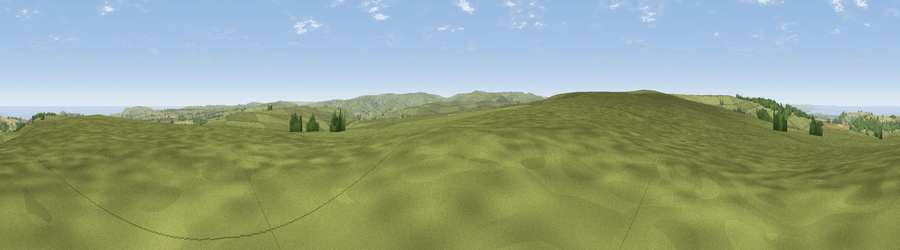

Viewpoint near Commondale
#6981 in England · top 23% of its area beats it · near CommondaleWhere it is
The exact computed spot (NZ 65125 12725). Click the marker for map links.
The view, rendered

A 360° render of this exact spot computed from the terrain model, tree cover and land cover — summer colours, afternoon light, calibrated against photographs of famous viewpoints. Real trees, hedges and buildings will differ in detail.
The panorama
Grey silhouette: terrain skyline in each direction (720 bearings, Earth curvature and refraction included). Dashed green: skyline with trees (+15 m) and buildings (+8 m) as obstacles. Blue strip: how far the ground is visible on each bearing.
Where the view opens
Wedge length = distance to the farthest visible ground on that bearing (vegetation-aware). Rings at 10, 25 and 50 km.
What fills the view
83% grassland · 7% water · 5% cropland · 5% woodland ·
Angular shares of the visible panorama (visual magnitude), not map area. Landscape diversity 0.29 (0–1 Shannon).
Key numbers
More beautiful places nearby
The staircase of upgrades: each row has a higher view potential than everything closer. Driving times are estimates from straight-line distance, calibrated against real road routing — check an actual route before setting out.
| Place | Direction | Drive | Score |
|---|---|---|---|
| Viewpoint near Charltons | NE · 0 km | ~1 min | 70.5 |
| Viewpoint near Margrove Park | NNE · 2 km | ~5 min | 74.2 |
| Viewpoint near Charltons | NW · 3 km | ~7 min | 80.6 |
| Viewpoint near Hutton Village | WNW · 4 km | ~9 min | 81.0 |
| Viewpoint near Hutton Village | WNW · 4 km | ~9 min | 84.2 |
| Roseberry Topping | W · 7 km | ~15 min | 85.8 |
| Warsett Hill | NNE · 10 km | ~19 min | 86.8 |
| Viewpoint near Easington | NE · 12 km | ~22 min | 90.2 |
54.50567, -0.99577 · source: screening · position refined by local search. Computed location — check access rights before visiting.